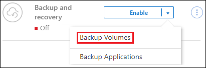

Notes de mise à jour
Notes de mise à jour
Sauvegarde des données Cloud Volumes ONTAP dans Google Cloud Storage
 Suggérer des modifications
Suggérer des modifications
Procédez en quelques étapes pour commencer à sauvegarder des données de volume de vos systèmes Cloud Volumes ONTAP vers Google Cloud Storage.
Démarrage rapide
Pour commencer rapidement, suivez ces étapes ou faites défiler jusqu'aux sections restantes pour obtenir plus de détails.
 Vérifiez la prise en charge de votre configuration
Vérifiez la prise en charge de votre configuration-
Vous exécutez Cloud Volumes ONTAP 9.8 ou une version ultérieure dans GCP (ONTAP 9.8P13 et version ultérieure recommandée).
-
Vous disposez d'un abonnement GCP valide pour l'espace de stockage où se trouvent vos sauvegardes.
-
Vous disposez d'un compte de service dans votre projet Google Cloud avec le rôle d'administrateur de stockage prédéfini.
-
Vous avez souscrit au "Offre de sauvegarde BlueXP Marketplace", ou vous avez acheté "et activé" Licence BYOL pour la sauvegarde et la restauration BlueXP de NetApp.
 Préparez votre connecteur BlueXP
Préparez votre connecteur BlueXPSi un connecteur est déjà déployé dans une région GCP, vous êtes tous configuré. Si ce n'est pas le cas, vous devez installer un connecteur BlueXP dans GCP pour sauvegarder les données Cloud Volumes ONTAP sur Google Cloud Storage. Le connecteur peut être installé sur un site avec un accès Internet complet (« mode standard ») ou avec une connectivité Internet limitée (« mode restreint »).
 Vérification des besoins en licence
Vérification des besoins en licenceVous devez vérifier les exigences de licence pour Google Cloud et BlueXP.
 Vérifiez les exigences de mise en réseau ONTAP pour la réplication de volumes
Vérifiez les exigences de mise en réseau ONTAP pour la réplication de volumesVérifiez que les systèmes source et de destination sont conformes à la version de ONTAP et aux exigences réseau.
 Sauvegardez et restaurez vos données BlueXP
Sauvegardez et restaurez vos données BlueXPSélectionnez l'environnement de travail et cliquez sur Activer > volumes de sauvegarde en regard du service de sauvegarde et de restauration dans le volet droit.
 Activez les sauvegardes sur vos volumes ONTAP
Activez les sauvegardes sur vos volumes ONTAPSuivez les instructions de l'assistant d'installation pour sélectionner les règles de réplication et de sauvegarde que vous utiliserez ainsi que les volumes à sauvegarder.
Vérifiez la prise en charge de votre configuration
Lisez les conditions suivantes pour vérifier que votre configuration est prise en charge avant de commencer à sauvegarder des volumes sur Google Cloud Storage.
L'image suivante montre chaque composant et les connexions que vous devez préparer entre eux.
Vous pouvez également vous connecter à un système ONTAP secondaire pour les volumes répliqués via la connexion publique ou privée.

- Versions de ONTAP prises en charge
-
Minimum de ONTAP 9.8 ; ONTAP 9.8P13 et ultérieur est recommandé.
- Régions GCP prises en charge
-
La sauvegarde et la restauration BlueXP sont prises en charge dans toutes les régions GCP "Dans ce cas, Cloud Volumes ONTAP est pris en charge".
- Compte de services GCP
-
Vous devez disposer d'un compte de service dans votre projet Google Cloud avec le rôle d'administrateur de stockage prédéfini. "Découvrez comment créer un compte de service".
Vérification des besoins en licence
Pour la sauvegarde et la restauration BlueXP, une licence PAYGO est disponible dans Google Marketplace et permet de déployer des solutions de sauvegarde et de restauration Cloud Volumes ONTAP et BlueXP. Vous devez le faire "Abonnez-vous à cet abonnement BlueXP" Avant d'activer la sauvegarde et la restauration BlueXP. La facturation de la sauvegarde et de la restauration BlueXP s'effectue via cet abonnement. "Vous pouvez vous abonner à la page Détails et amp ; informations d'identification de l'assistant de l'environnement de travail".
Pour les licences BYOL de sauvegarde et de restauration BlueXP, vous devez disposer du numéro de série de NetApp qui vous permet d'utiliser le service pendant la durée et la capacité de la licence. "Découvrez comment gérer vos licences BYOL".
Vous devez également disposer d'un abonnement Google pour l'espace de stockage où vos sauvegardes seront stockées.
Préparez votre connecteur BlueXP
Le connecteur doit être installé dans une région Google avec accès à Internet.
Vérifiez ou ajoutez des autorisations au connecteur
Pour utiliser la fonctionnalité de sauvegarde et de restauration BlueXP « Rechercher et restaurer », vous devez disposer d'autorisations spécifiques dans le rôle du connecteur afin qu'il puisse accéder au service Google Cloud BigQuery. Reportez-vous aux autorisations ci-dessous et suivez les étapes si vous devez modifier la stratégie.
-
Dans le "Console Google Cloud", Allez à la page rôles.
-
A l'aide de la liste déroulante située en haut de la page, sélectionnez le projet ou l'organisation qui contient le rôle que vous souhaitez modifier.
-
Sélectionnez un rôle personnalisé.
-
Sélectionnez Modifier le rôle pour mettre à jour les autorisations du rôle.
-
Sélectionnez Ajouter des autorisations pour ajouter les nouvelles autorisations suivantes au rôle.
bigquery.jobs.get bigquery.jobs.list bigquery.jobs.listAll bigquery.datasets.create bigquery.datasets.get bigquery.jobs.create bigquery.tables.get bigquery.tables.getData bigquery.tables.list bigquery.tables.create -
Sélectionnez mettre à jour pour enregistrer le rôle modifié.
Informations requises pour l'utilisation de clés de chiffrement gérées par le client (CMEK)
Vous pouvez utiliser vos propres clés gérées par le client pour le chiffrement des données au lieu d'utiliser les clés de chiffrement gérées par Google par défaut. Les clés inter-régions et inter-projets sont prises en charge. Vous pouvez donc choisir un projet pour un compartiment différent du projet de la clé CMEK. Si vous prévoyez d'utiliser vos propres clés gérées par le client :
-
Vous devez disposer du porte-clés et du nom de la clé pour pouvoir ajouter ces informations dans l'assistant d'activation. "En savoir plus sur les clés de chiffrement gérées par les clients".
-
Vous devez vérifier que les autorisations requises sont incluses dans le rôle du connecteur :
cloudkms.cryptoKeys.get
cloudkms.cryptoKeys.getIamPolicy
cloudkms.cryptoKeys.list
cloudkms.cryptoKeys.setIamPolicy
cloudkms.keyRings.get
cloudkms.keyRings.getIamPolicy
cloudkms.keyRings.list
cloudkms.keyRings.setIamPolicy-
Vous devez vérifier que l'API Google « Cloud Key Management Service (KMS) » est activée dans votre projet. Voir la "Documentation Google Cloud : activation des API" pour plus d'informations.
Considérations de CMEK:
-
Les clés HSM (à support matériel) et logicielles sont prises en charge.
-
Les clés KMS créées ou importées Cloud sont toutes les deux prises en charge.
-
Seules les clés régionales sont prises en charge ; les clés globales ne sont pas prises en charge.
-
Actuellement, seul l'objectif "chiffrement/déchiffrement symétrique" est pris en charge.
-
L'agent de service associé au compte de stockage se voit attribuer le rôle IAM « CryptoKey Encrypter/Decrypter (roles/cloudkms.cryptoKeyEncrypterDecrypter) » par la sauvegarde et la restauration BlueXP.
Créez vos propres compartiments
Par défaut, le service crée des compartiments pour vous. Si vous souhaitez utiliser vos propres compartiments, vous pouvez les créer avant de démarrer l'assistant d'activation de sauvegarde, puis les sélectionner dans l'assistant.
Vérifiez les exigences de mise en réseau ONTAP pour la réplication de volumes
Si vous prévoyez de créer des volumes répliqués sur un système ONTAP secondaire à l'aide de la sauvegarde et de la restauration BlueXP, assurez-vous que les systèmes source et de destination respectent les exigences de mise en réseau suivantes.
Exigences de mise en réseau ONTAP sur site
-
Si le cluster se trouve dans votre site, vous devez disposer d'une connexion entre votre réseau d'entreprise et votre réseau virtuel dans le fournisseur cloud. Il s'agit généralement d'une connexion VPN.
-
Les clusters ONTAP doivent répondre à des exigences supplémentaires en termes de sous-réseau, de port, de pare-feu et de cluster.
Comme vous pouvez répliquer sur des systèmes Cloud Volumes ONTAP ou sur site, examinez les exigences de peering pour les systèmes ONTAP sur site. "Afficher les conditions préalables au peering de cluster dans la documentation de ONTAP".
Configuration réseau requise par Cloud Volumes ONTAP
-
Le groupe de sécurité de l'instance doit inclure les règles d'entrée et de sortie requises : plus précisément, les règles d'ICMP et les ports 11104 et 11105. Ces règles sont incluses dans le groupe de sécurité prédéfini.
-
Pour répliquer des données entre deux systèmes Cloud Volumes ONTAP dans différents sous-réseaux, les sous-réseaux doivent être routés ensemble (paramètre par défaut).
Activez la sauvegarde et la restauration BlueXP sur Cloud Volumes ONTAP
L'activation de la sauvegarde et de la restauration BluXP est simple. Les étapes diffèrent légèrement selon que vous disposez d'un système Cloud Volumes ONTAP existant ou d'un nouveau système.
Activez la sauvegarde et la restauration BlueXP sur un nouveau système
La sauvegarde et la restauration BlueXP peuvent être activées lorsque vous créez un système Cloud Volumes ONTAP à l'aide de l'assistant de l'environnement de travail.
Un compte de service doit déjà être configuré. Si vous ne sélectionnez pas de compte de service lors de la création du système Cloud Volumes ONTAP, vous devrez désactiver le système et ajouter le compte de service à Cloud Volumes ONTAP depuis la console GCP.
Voir "Lancement d'Cloud Volumes ONTAP dans GCP" Pour connaître les conditions requises et les détails relatifs à la création du système Cloud Volumes ONTAP.
-
Dans le canevas BlueXP, sélectionnez Ajouter un environnement de travail, choisissez le fournisseur cloud et sélectionnez Ajouter nouveau. Sélectionnez Créer Cloud Volumes ONTAP.
-
Choisissez un emplacement : sélectionnez Google Cloud Platform.
-
Choisissez le type : sélectionnez Cloud Volumes ONTAP (à un seul nœud ou haute disponibilité).
-
Détails et informations d'identification : saisissez les informations suivantes :
-
Cliquez sur Modifier le projet et sélectionnez un nouveau projet si celui que vous souhaitez utiliser est différent du projet par défaut (où réside le connecteur).
-
Spécifier le nom du cluster
-
Activez le commutateur compte de service et sélectionnez le compte de service qui possède le rôle d'administrateur de stockage prédéfini. Cette opération est nécessaire pour activer les sauvegardes et le Tiering.
-
Spécifiez les informations d'identification.
Assurez-vous qu'un abonnement GCP Marketplace est en place.

-
-
Services : laissez le service de sauvegarde et de récupération BlueXP activé et cliquez sur Continuer.

-
Complétez les pages de l'assistant pour déployer le système comme décrit à la section "Lancement d'Cloud Volumes ONTAP dans GCP".

|
Pour modifier les paramètres de sauvegarde ou ajouter une réplication, reportez-vous à la section "Gérer les sauvegardes ONTAP". |
La sauvegarde et la restauration BlueXP sont activées sur le système. Une fois les volumes créés sur ces systèmes Cloud Volumes ONTAP, lancez la sauvegarde et la restauration BlueXP "activez la sauvegarde sur chaque volume que vous souhaitez protéger".
Activez la sauvegarde et la restauration BlueXP sur un système existant
Vous pouvez activer la sauvegarde et la restauration BlueXP à tout moment, directement depuis l'environnement de travail.
-
Dans BlueXP Canvas, sélectionnez l'environnement de travail et sélectionnez Activer en regard du service de sauvegarde et de restauration dans le panneau de droite.
Si la destination Google Cloud Storage pour vos sauvegardes existe en tant qu'environnement de travail sur la Canvas, vous pouvez faire glisser le cluster vers l'environnement de travail Google Cloud Storage pour lancer l'assistant d'installation.
|
|
Pour modifier les paramètres de sauvegarde ou ajouter une réplication, reportez-vous à la section "Gérer les sauvegardes ONTAP". |
Activez les sauvegardes sur vos volumes ONTAP
Activez les sauvegardes à tout moment directement depuis votre environnement de travail sur site.
Un assistant vous guide à travers les étapes principales suivantes :
Vous pouvez également Affiche les commandes API à l'étape de vérification, vous pouvez copier le code pour automatiser l'activation de la sauvegarde pour les futurs environnements de travail.
Démarrez l'assistant
-
Accédez à l'assistant Activer la sauvegarde et la récupération de l'une des manières suivantes :
-
Dans le canevas BlueXP, sélectionnez l'environnement de travail et sélectionnez Activer > volumes de sauvegarde en regard du service de sauvegarde et de restauration dans le panneau de droite.

Si la destination GCP de vos sauvegardes existe en tant qu'environnement de travail sur la zone de travail, vous pouvez faire glisser le cluster ONTAP vers le stockage objet GCP.
-
Sélectionnez volumes dans la barre de sauvegarde et de récupération. Dans l'onglet volumes, sélectionnez actions
 Et sélectionnez Activer la sauvegarde pour un seul volume (dont la réplication ou la sauvegarde sur le stockage objet n'est pas déjà activée).
Et sélectionnez Activer la sauvegarde pour un seul volume (dont la réplication ou la sauvegarde sur le stockage objet n'est pas déjà activée).
La page Introduction de l'assistant affiche les options de protection, y compris les snapshots locaux, la réplication et les sauvegardes. Si vous avez effectué la deuxième option de cette étape, la page définir la stratégie de sauvegarde s'affiche avec un volume sélectionné.
-
-
Continuez avec les options suivantes :
-
Si vous disposez déjà d'un connecteur BlueXP, vous êtes paré. Sélectionnez Suivant.
-
Si vous ne disposez pas encore d'un connecteur BlueXP, l'option Ajouter un connecteur apparaît. Reportez-vous à la section Préparez votre connecteur BlueXP.
-
Sélectionnez les volumes à sauvegarder
Choisissez les volumes à protéger. Un volume protégé possède un ou plusieurs des éléments suivants : règle Snapshot, règle de réplication, règle de sauvegarde sur objet.
Vous pouvez choisir de protéger les volumes FlexVol ou FlexGroup, mais vous ne pouvez pas sélectionner un mélange de ces volumes lors de l'activation de la sauvegarde pour un environnement de travail. Découvrez comment "activer la sauvegarde des volumes supplémentaires dans l'environnement de travail" (FlexVol ou FlexGroup) après avoir configuré la sauvegarde des volumes initiaux.

|
|
Notez que si des règles Snapshot ou de réplication sont déjà appliquées sur les volumes que vous choisissez, les règles que vous sélectionnez ultérieurement remplaceront ces règles existantes.
-
Dans la page Sélectionner des volumes, sélectionnez le ou les volumes à protéger.
-
Vous pouvez également filtrer les lignes pour n'afficher que les volumes avec certains types de volumes, styles et autres pour faciliter la sélection.
-
Après avoir sélectionné le premier volume, vous pouvez sélectionner tous les volumes FlexVol (les volumes FlexGroup ne peuvent être sélectionnés qu'un par un). Pour sauvegarder tous les volumes FlexVol existants, cochez d'abord un volume, puis cochez la case dans la ligne de titre. (
 ).
). -
Pour sauvegarder des volumes individuels, cochez la case de chaque volume (
 ).
).
-
-
Sélectionnez Suivant.
Définir la stratégie de sauvegarde
La définition de la stratégie de sauvegarde implique la définition des options suivantes :
-
Que vous souhaitiez une ou plusieurs options de sauvegarde : snapshots locaux, réplication et sauvegarde vers le stockage objet
-
Architecture
-
Règle Snapshot locale
-
Cible et règle de réplication
Si les règles Snapshot et de réplication des volumes choisis sont différentes de celles sélectionnées à cette étape, les règles existantes seront remplacées. -
Sauvegarde vers des informations de stockage objet (fournisseur, chiffrement, mise en réseau, règles de sauvegarde et options d'exportation).
-
Dans la page définir la stratégie de sauvegarde, choisissez une ou plusieurs des options suivantes. Les trois sont sélectionnés par défaut :
-
Snapshots locaux : si vous effectuez une réplication ou une sauvegarde sur un stockage objet, des snapshots locaux doivent être créés.
-
Réplication : crée des volumes répliqués sur un autre système de stockage ONTAP.
-
Backup : sauvegarde les volumes dans le stockage objet.
-
-
Architecture : si vous avez choisi la réplication et la sauvegarde, choisissez l'un des flux d'informations suivants :
-
Cascading : les informations circulent du système de stockage principal vers le stockage secondaire et du stockage secondaire vers le stockage objet.
-
Fan Out : les informations circulent du système de stockage primaire vers le stockage secondaire et du stockage primaire vers le stockage objet.
Pour plus d'informations sur ces architectures, reportez-vous à la section "Planifiez votre parcours en matière de protection".
-
-
Instantané local : choisissez une règle Snapshot existante ou créez-en une.
Pour créer une stratégie personnalisée avant d'activer la sauvegarde, reportez-vous à la section "Création d'une règle". Pour créer une stratégie, sélectionnez Créer une nouvelle stratégie et procédez comme suit :
-
Entrez le nom de la règle.
-
Sélectionnez jusqu'à 5 programmes, généralement de fréquences différentes.
-
Sélectionnez Créer.
-
-
Réplication : définissez les options suivantes :
-
Cible de réplication : sélectionnez l'environnement de travail de destination et le SVM. Si vous le souhaitez, sélectionnez le ou les agrégats de destination, ainsi que le préfixe ou le suffixe à ajouter au nom du volume répliqué.
-
Règle de réplication : choisissez une règle de réplication existante ou créez-en une.
Pour créer une stratégie personnalisée avant d'activer la réplication, reportez-vous à la section "Création d'une règle". Pour créer une stratégie, sélectionnez Créer une nouvelle stratégie et procédez comme suit :
-
Entrez le nom de la règle.
-
Sélectionnez jusqu'à 5 programmes, généralement de fréquences différentes.
-
Sélectionnez Créer.
-
-
-
Sauvegarder dans l'objet : si vous avez sélectionné Sauvegarder, définissez les options suivantes :
-
Fournisseur : sélectionnez Google Cloud.
-
Paramètres du fournisseur : saisissez les détails du fournisseur et la région dans laquelle les sauvegardes seront stockées.
Créez un nouveau compartiment ou sélectionnez un compartiment existant.
-
Clé de chiffrement : si vous avez créé un nouveau compartiment Google, entrez les informations de clé de chiffrement qui vous ont été fournies par le fournisseur. Vous pouvez choisir d'utiliser les clés de chiffrement Google Cloud par défaut ou de choisir vos propres clés gérées par le client dans votre compte Google pour gérer le chiffrement de vos données.
Si vous choisissez d'utiliser vos propres clés gérées par le client, entrez le coffre-fort de clés et les informations de clés.
Si vous avez choisi un compartiment Google Cloud existant, les informations de chiffrement sont déjà disponibles. Vous n'avez donc pas besoin de le saisir maintenant. -
Politique de sauvegarde : sélectionnez une stratégie de stockage de sauvegarde vers objet existante ou créez-en une.
Pour créer une stratégie personnalisée avant d'activer la sauvegarde, reportez-vous à la section "Création d'une règle". Pour créer une stratégie, sélectionnez Créer une nouvelle stratégie et procédez comme suit :
-
Entrez le nom de la règle.
-
Sélectionnez jusqu'à 5 programmes, généralement de fréquences différentes.
-
Sélectionnez Créer.
-
-
Exporter les copies Snapshot existantes vers le stockage objet en tant que copies de sauvegarde : s'il existe des copies Snapshot locales pour les volumes de cet environnement de travail qui correspondent au libellé du programme de sauvegarde que vous venez de sélectionner pour cet environnement de travail (par exemple, tous les jours, toutes les semaines, etc.), cette invite supplémentaire s'affiche. Cochez cette case pour que tous les snapshots historiques soient copiés dans le stockage objet en tant que fichiers de sauvegarde afin de garantir une protection complète de vos volumes.
-
-
Sélectionnez Suivant.
Vérifiez vos sélections
C'est l'occasion de revoir vos sélections et d'apporter des ajustements, si nécessaire.
-
Dans la page révision, vérifiez vos sélections.
-
Cochez éventuellement la case synchronisez automatiquement les étiquettes de la règle Snapshot avec les étiquettes de la règle de réplication et de sauvegarde. Cette opération crée des snapshots avec une étiquette qui correspond aux étiquettes des règles de réplication et de sauvegarde.
-
Sélectionnez Activer la sauvegarde.
La sauvegarde et la restauration BlueXP commencent à effectuer les sauvegardes initiales de vos volumes. Le transfert de base du volume répliqué et du fichier de sauvegarde inclut une copie complète des données du système de stockage primaire. Les transferts suivants contiennent des copies différentielles des données du système de stockage principal contenues dans les copies Snapshot.
Un volume répliqué est créé dans le cluster de destination qui sera synchronisé avec le volume du système de stockage principal.
Un compartiment Google Cloud Storage est créé dans le compte de service indiqué par la clé d'accès Google et la clé secrète que vous avez saisies, et les fichiers de sauvegarde y sont stockés.
Les sauvegardes sont associées par défaut à la classe de stockage Standard. Vous pouvez utiliser les classes de stockage Nearline, Coldline ou Archive moins coûteuses. Toutefois, vous configurez la classe de stockage via Google, et non via l'interface de sauvegarde et de restauration BlueXP. Consultez la rubrique Google "Modification de la classe de stockage par défaut d'un compartiment" pour plus d'informations.
Le tableau de bord de sauvegarde de volume s'affiche pour vous permettre de surveiller l'état des sauvegardes.
Vous pouvez également surveiller l'état des tâches de sauvegarde et de restauration à l'aide de l' "Panneau surveillance des tâches".
Affiche les commandes API
Vous pouvez afficher et éventuellement copier les commandes d'API utilisées dans l'assistant Activer la sauvegarde et la restauration. Vous pouvez utiliser cette option pour automatiser l'activation des sauvegardes dans les futurs environnements de travail.
-
Dans l'assistant Activer la sauvegarde et la récupération, sélectionnez Afficher la requête API.
-
Pour copier les commandes dans le presse-papiers, sélectionnez l'icône Copier.
Et la suite ?
-
C'est possible "gérez vos fichiers de sauvegarde et vos règles de sauvegarde". Cela comprend le démarrage et l'arrêt des sauvegardes, la suppression des sauvegardes, l'ajout et la modification de la planification des sauvegardes, etc.
-
C'est possible "gérez les paramètres de sauvegarde au niveau du cluster". Cela inclut notamment la modification de la bande passante réseau disponible pour télécharger les sauvegardes vers le stockage objet, la modification du paramètre de sauvegarde automatique pour les volumes futurs, et bien plus encore.
-
Vous pouvez également "restaurez des volumes, des dossiers ou des fichiers individuels à partir d'un fichier de sauvegarde" Vers un système Cloud Volumes ONTAP dans Google ou vers un système ONTAP sur site.